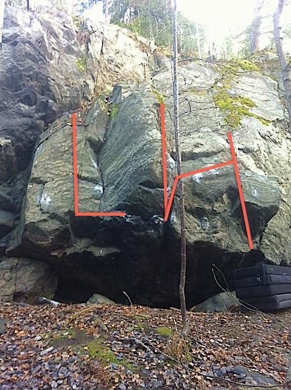

Två småväggar och med korta intensiva problem samt en highballvägg. Korta anmarscher och nära T-Bana helt klart värt ett besök. Var beredd på viss publik vid Parkeringsväggen.
Kommer du från stan eller E4 så sväng av så du kommer upp på stora rondellen som är över nynäsvägen, i rondellen sväng vänster. Du ska nu befinna dej på sofielundsvägen. sväng sedan vänster in på garagevägen och ganska på en gång in höger på paternostervägen. följ denna väg som sedan övergår i ulricehamnsvägen. sväng nästa höger in på malmövägen följ denna och efter en stund ser du en kyrka på vänster sida sväng in vänster efter denna och parkera. Gratis parkering i 4 tim.
En större klippa med lite highballs och boulders samt några stenhårda projekt för den hugade. Gå förbi hyreshuset på vänster sida så ligger klippan på vänster sida mittemot fritidsett. Var bered på vissa kommentarer från nyfikna barn.


Några projekt är påbörjade här.
Om du står på parkeringen så du har dagiset på vänster hand och det stora hyreshuset på höger hand gå rakt fram och in på stigen följ backen upp en bit och titta åt vänster så ser du en liten vägg en bit in i skogen. Klippan är borstad även om det inte ser ut så på bilden.

Gå in på gångvägen som går förbi dagiset (enplans byggnaden, ser ut lite som en barack) du kommer nu ut på en gräsplan. fortsätt rakt fram gå över fotbollsplanen och till vänster om stora eljusspåret finns en liten stig in i skogen. Gå in där och klippan är på vänster sida efter några meter.
Den lite högre väggen, ca 10m till höger om Tott.
Tre problem
Kategori:Stockholm
Kategori:Saknar karta
Kategori:Saknar koordinater
Copyright (C) Permission is granted to copy, distribute and/or modify this document under the terms of the GNU Free Documentation License, Version 1.3